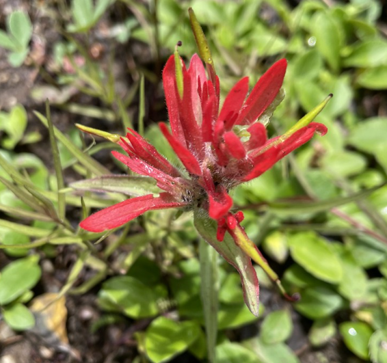

Servicios
Oferezo diferentes modalidades de sesiones para adaptar la terapia a las necesidades de la persona.
Sesiones online
Las sesiones online permiten realizar el proceso terapéutico desde casa o desde otro lugar donde te sientas tranquila.
Ofrecen la misma calidad de acompañamiento y facilitan que la terapia pueda adaptarse a las necesidades de cada persona.
Sesiones a domicilio
Ofrezco sesiones a domicilio para personas que prefieren realizar el proceso terapéutico en su propio espacio o que tienen dificultades para desplazarse.
Estas sesiones se realizan principalmente en la zona de Altafulla, Torredembarra y poblaciones cercanas, así como en la zona de La Sénia.
Si tienes dudas sobre la disponibilidad o la zona, puedes contactar y lo comentamos.

Acompañamiento terapéutico caminando
Las sesiones caminando al aire libre ofrecen una manera diferente de vivir el proceso terapéutico.
El movimiento, el contacto con el entorno y la conversación pueden facilitar la reflexión y ayudar a que las emociones fluyan con mayor naturalidad.